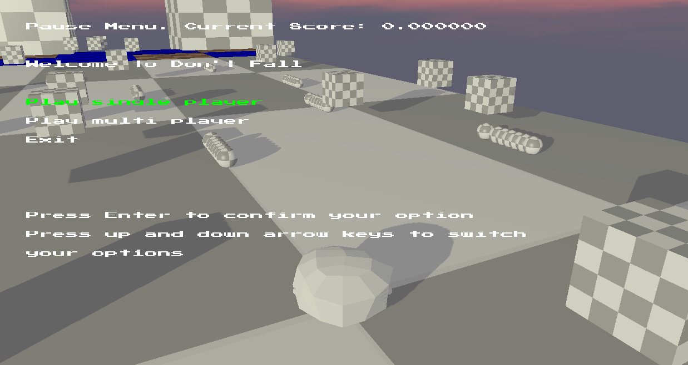

The advanced game technology assignment was to create a short game based on Fall Guys using an engine created for the assignment,
which included some simple physics, and a modified version of openGL. We were told to concentrate on fixing and extending
some elements of the physics simulation, such as different types of collision detection, and then to create a functional
level with interesting mechanics and obstacles, with the addition of AI players to compete against.
How it works
Demonstration of a game with the AI
For my project, I chose to focus on making a short level work as well as it could, with a simple text menu for choosing
different options, an assessment of win states and scores, and the ability to close the game. I also made sure to include various features I deemed as
essential, and then worked from there to add complexity, for example kill planes for when players inevitably fell off the platform, basic obstacles to
add some difficulty, pickups which could increase score, a finish line to trigger the end of the game, and basic A* pathfinding for the AI which
attempted to avoid the obstacles where possible.
Demonstration of the finish line functioning
Observations
The game loop itself worked well, and it was very much a continuation of existing projects where I’d created specific game loops.
While this was the easiest part of the project, I take a lot of pride in my efforts. Additionally, the project was a good exercise in managing
feature creep, as I had a hard deadline, which meant I needed to prioritise the elements I was working on carefully.
The menus
How successful was it?
Unfortunately I didn’t have time to complete certain features, such as object oriented bounding boxes, or capsules, which would have allowed me to add
more detail to my game such as slopes and hills to incentivise skillful play, or better collision detection by making the players' colliders capsules. I did achieve
a mark of 73 overall, however I feel there was definitely more I could add in terms of making the game more fun to play. Additionally, there were balance
issues I’d like to have gone back and fixed. Not to mention some of the obstacles being unnecessarily frustrating rather than engaging. I was happy with the
mark however, and I was somewhat pleased with the results, even if the game itself isn’t something I’d choose to play in its present state.
Some obstacles I wasn't happy with
What would I do differently if I started over?
I may have prioritised different elements that either didn't make it in, or weren't as polished as I'd have liked, but on a limited time scale,
this would have caused issues elsewhere. The one thing that could have sped things up which didn't occur to me earlier, was
actually taking the time to plan the level. Thankfully I took that on board for the team project, and it proved to be a great help.
How I've been able to use it
This was a particularly good project for working further on AI. I had had an opportunity to design a simple NPC AI which would follow its own goals based
on in game elements, such as the position of the player, for example, if there was an AI closer to the goal than the player, the AI would focus on reaching the goal.
If the player however was closer, the AI would gang up on the player, and try to stop them finishing. This was also influential in considering how I would do some of
the work in my year 4 project and dissertation. It also helped solidify some simple concepts in programming for games which I had some trouble with- although
possibly due to engine problems- in a third year module.
Some of the AI closest to the player targeting the player, rather than the finish line to add challenge